Primer pivoted from an after school product to a full time, in person K-8 school network. Running physical schools needs a platform, and there wasn’t one. Teachers, students, and parents each worked across five to eleven separate tools.
I led design for the platform for nearly three years, working with the head of product, the head of engineering, a small engineering team, and one other product designer.
- 6 → 18 Campus expansion
- 150 → 1,200 Student enrollment growth
- 4 surfaces One data model
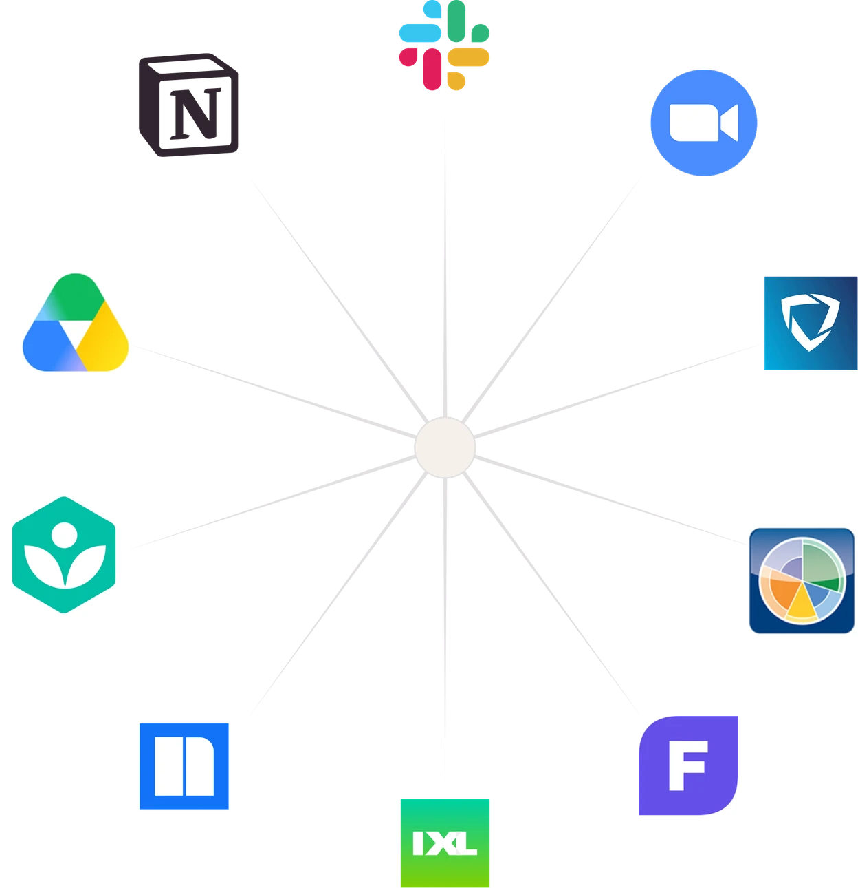
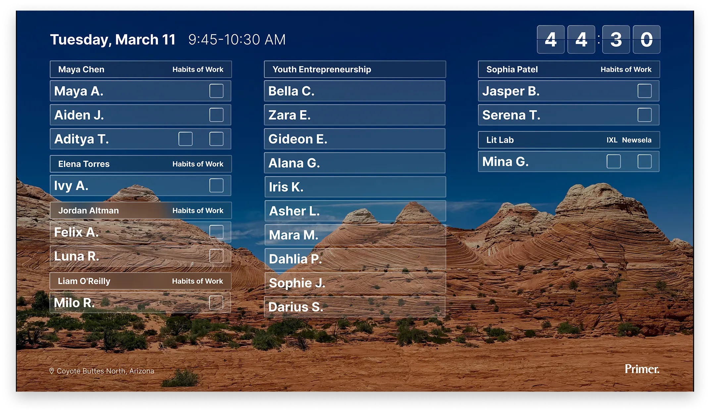
Television display shows current class with weekly goals progress visible to students and teachers.
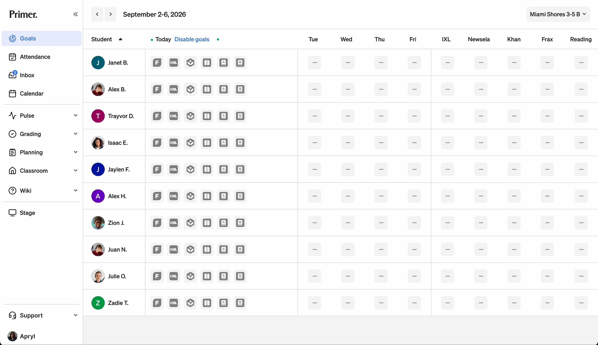
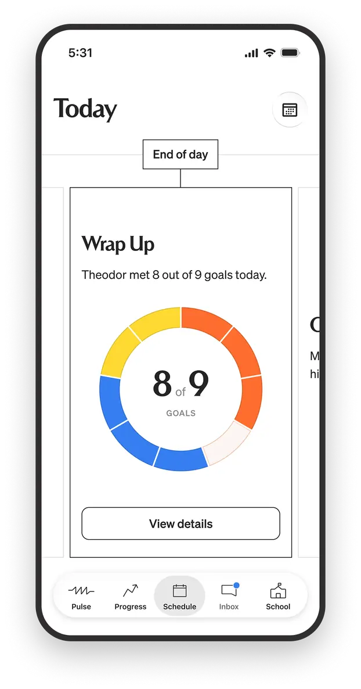
Parent, native iOS view of daily goals.
Educator goal tracking across a week.
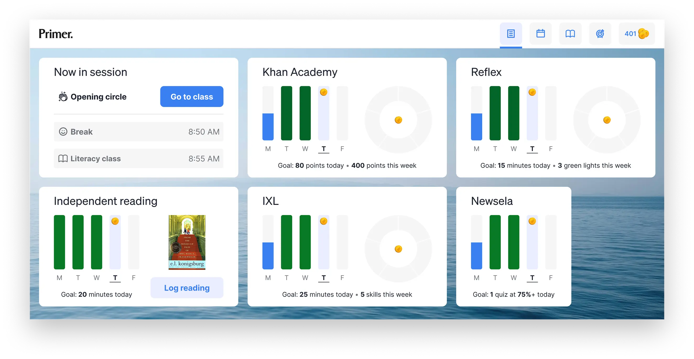
Student daily and weekly goal tracking
A student’s progress lived across six learning apps and grew as the product evolved. Each one counts differently: points, skills, quiz scores, minutes, topics. To check one student, a teacher opened six apps and translated six scoring systems in their head.
Four versions over about a year. Each one answers a question the last one exposed.
- Flat grid
- Interpretation layer
- Data on demand
- Dynamic week
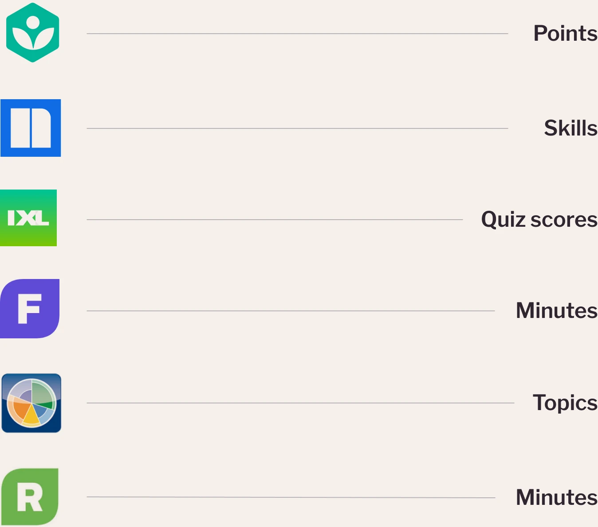
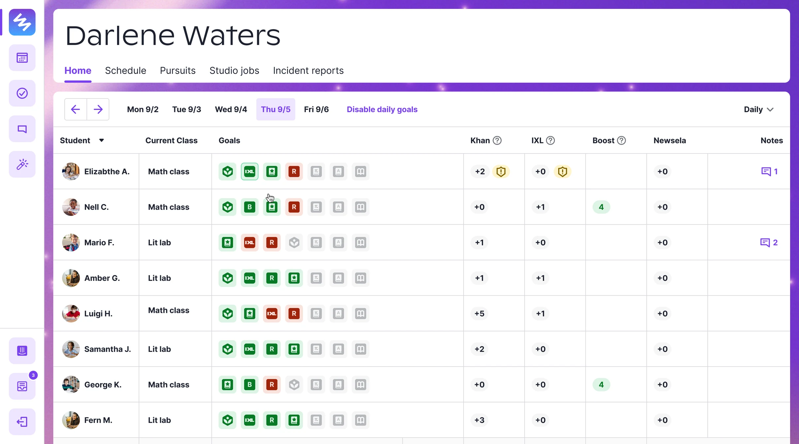
Design approach
Consolidate every app’s daily goals into a single color coded grid. One row per student, one cell per goal. Green met, red missed, grey no data.
The design tradeoff: six different measurement systems (points, skills, quiz scores, minutes, topics) collapsed into one binary state. That discarded nuance on purpose, to buy a view a teacher could read in seconds while class was happening.
Teacher feedback
- green and red couldn’t express partial progress
Teacher feedback
- green and red couldn’t express partial progress
- learning alerts weren’t decodable at a glance
Teacher feedback
- green and red couldn’t express partial progress
- learning alerts weren’t decodable at a glance
- notes didn’t carry tone or class
Teacher feedback
- green and red couldn’t express partial progress
- learning alerts weren’t decodable at a glance
- notes didn’t carry tone or class
- milestones were missing from the dashboard
The flat grid answered who is off track. It did not answer what to do about it. A teacher could see a problem and still not know what it was.
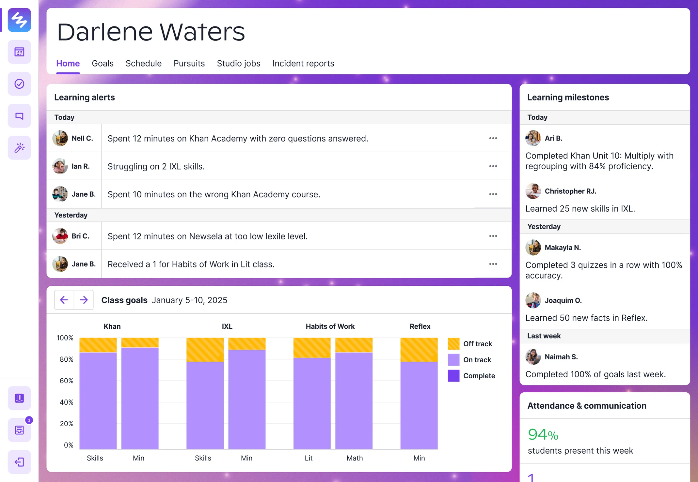
Design approach
Rather than put meaning in the grid, I built a layer on top that read the data and told the teacher what it meant: learning alerts, milestones, class goal completion. Raw goals moved to their own tab.
The tradeoff: I gave up the single view for interpretation, betting teachers wanted conclusions more than data.
Educator feedback
- Class goals landed flat; teachers wanted to help individual students, not track an aggregate.
- Learning alerts were helpful but the tech sync lagged and by the time an alert was sent, the class or lab was over.
- Milestones worked, teachers used them to call kids out for a job well done, and they worked well enough that we later folded them into the large-screen classroom display.
Educator feedback
- Class goals landed flat; teachers wanted to help individual students, not track an aggregate.
- Learning alerts were helpful but the tech sync lagged and by the time an alert was sent, the class or lab was over.
- Milestones worked, teachers used them to call kids out for a job well done, and they worked well enough that we later folded them into the large-screen classroom display.
Educator feedback
- Class goals landed flat; teachers wanted to help individual students, not track an aggregate.
- Learning alerts were helpful but the tech sync lagged and by the time an alert was sent, the class or lab was over.
- Milestones worked, teachers used them to call kids out for a job well done, and they worked well enough that we later folded them into the large-screen classroom display.
Doing the teacher’s thinking for them was the wrong bet. They needed data to assess, not a conclusion to accept. This is the version I would take back.
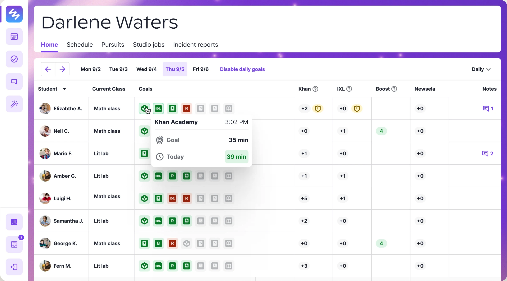
Design approach
Instead of choosing between the glance and the detail, I layered them. The grid still answers who is off track. Hovering a goal shows the number behind the color, goal 35 minutes, today 39, so a teacher can tell “just missed” from “never started” without leaving the roster.
Six apps, six ways to measure. Each alert type carries its own unit: minutes, attempts, quiz accuracy, Lexile level, score, sessions.
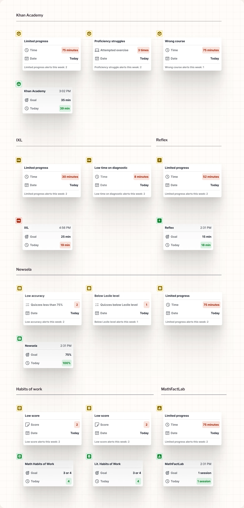
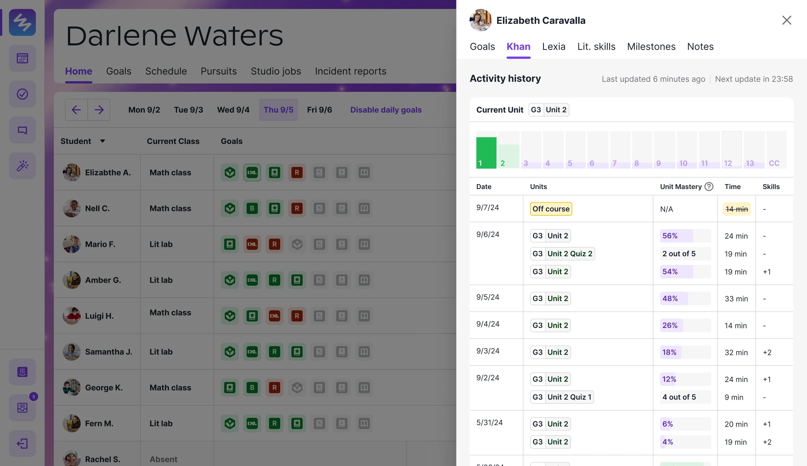
Design approach
Clicking opens the full record: today in the context of the week, and the year as a graph.
Teacher feedback
- This was the first version where teachers could diagnose. Hover gave the immediate read, close to goal or nowhere near it. Click gave the day in the context of the week and the year as a graph.
- Weekly progress still meant clicking through each day one at a time. Teachers wanted to see the week as a unit.
Teachers could now see a problem and get to the detail behind it. But the dashboard still thought in days. By Thursday, understanding one student’s week meant clicking back through four of them.
Design approach
The full week is on screen. Each day collapses to a circle showing goal completion, and any day expands in place. App goals sum across the week, so a teacher can tell who is on track without opening a single day.
Teachers stopped navigating to answer the question. The week became the default unit, and the day became the detail.
The four versions were about one question: what does this person need to know, right now, to act.
Teachers stopped opening the learning apps. All six sources resolved into one view, and the same data extended to the parent app, the student view, and the classroom display with a different interface for each.
It held as the network grew from 6 campuses to 18, and as the academic team added and dropped learning apps. The model absorbed the changes without a redesign.
Television display shows current class with weekly goals progress visible to students and teachers.
Parent, native iOS view of daily goals.
Educator goal tracking across a week.
Student daily and weekly goal tracking